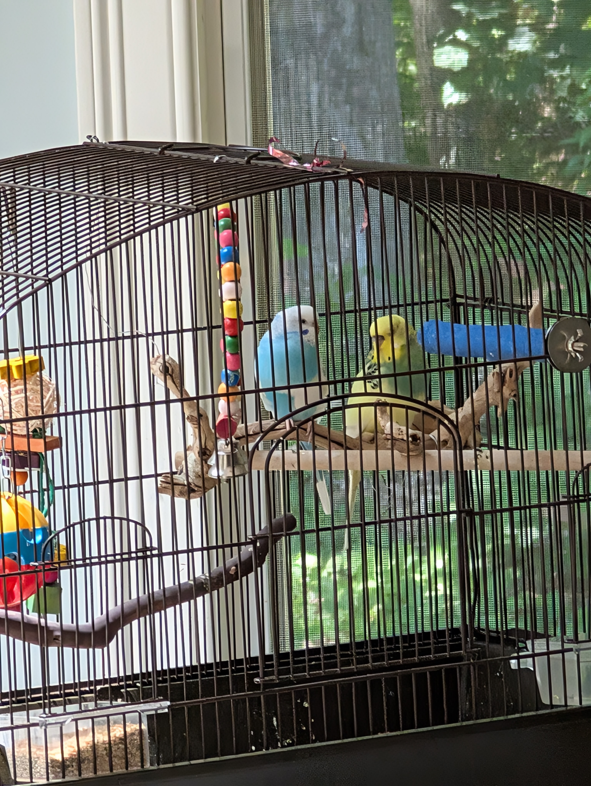

My name is Ammarah Khan and I am 15 years old and from Southborough Massachusetts

These are my birds blue one is Luna and the yellow greenish-blue one is Pistachio but we call her Pista.
I live with both my parents, my grandparents from my dad's side, and my little brother who's 3 years younger than me and a mini tornado.
I'm a rising sophmore at Algonquin Regional High School and my favorite subjects are science, english, and spanish.
Some of my hobbies are crafting, cooking, reading, and listening to music. My favorite music to listen to is Kpop and Jpop
Press these buttons to learn more about me!